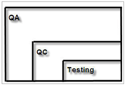

Who is the QA engineer?
Quality Assurance (QA) — is a set of activities covering all the technological stages of the development, release and exploitation software of information system taken at different stages of the software lifecycle in order to ensure a high level of product quality
Software testing consists of the next planning activities:
test management; test design; test execution; test analysis.
QA includes the process of Quality Control. QC-specialists analyze the results of testing and they are responsible for searching, detection and destruction of defects in product.

There are 4 main roles:
Functional types of testing
Non-functional types of testing
Change-Related Types of Testing
The stages of life cycle software development
Test Plan — document which describes object, the strategy of testing, timetable, criteria for starting and ending testing, special knowledge and different risks.
Test Case&Test suite — this is a sequence of actions by which you can verify the compliance of the function under test with the established requirements.
Bug Reports / Defects — documents which describe the situation or the sequence of actions that led to the incorrect operation. Required components are actual and expected result in the bug report.
Test Design Technics